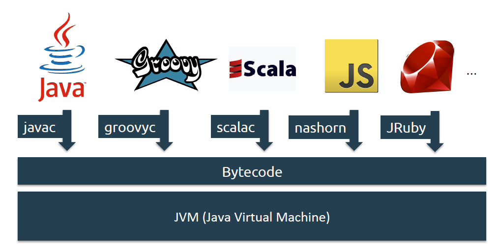
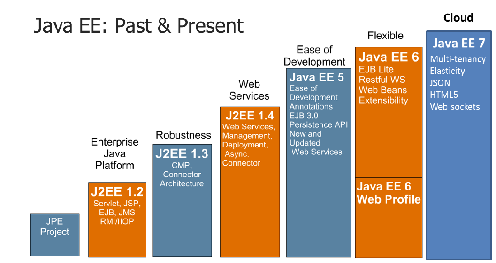
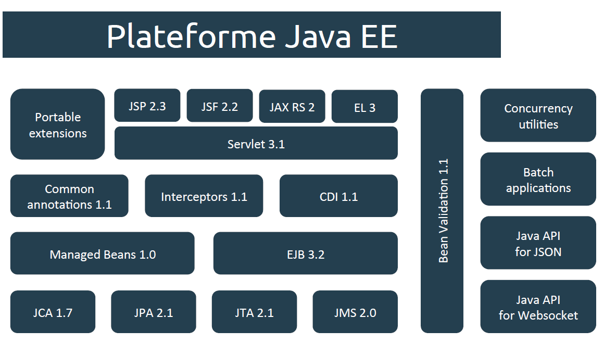

Plusieurs langages composent l'écosystème Java tel que Java, Groovy, Scala, Ruby, Javascript.
Ce sont des langages portables sur la plupart des OS grâce à la machine virtuelle (JVM).
C'est à dire que du bytecode est généré puis exécuté sur la JVM.
La machine virtuelle d'Androïd est de très mauvaise qualité.
=>3 Giga de RAM pour Androïd contre 1 pour iOS.

Java EE est un standard de Java destiné aux entreprises. Il permet de créer des applications web.

Un serveur qui supporte Java JEE est capable d'utiliser toutes ces briques. 